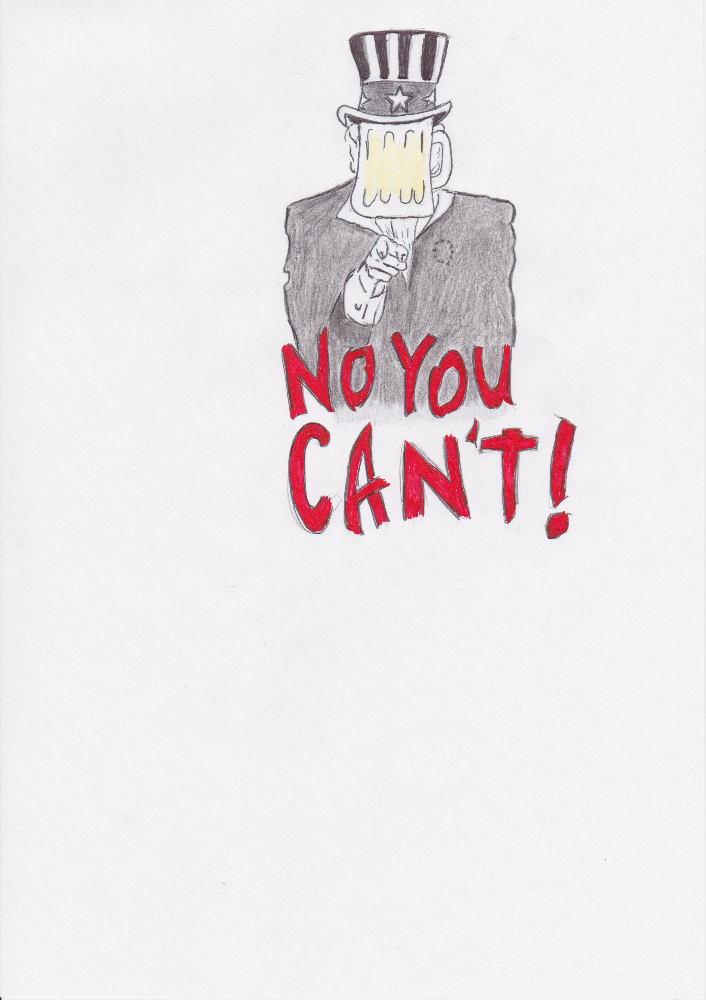
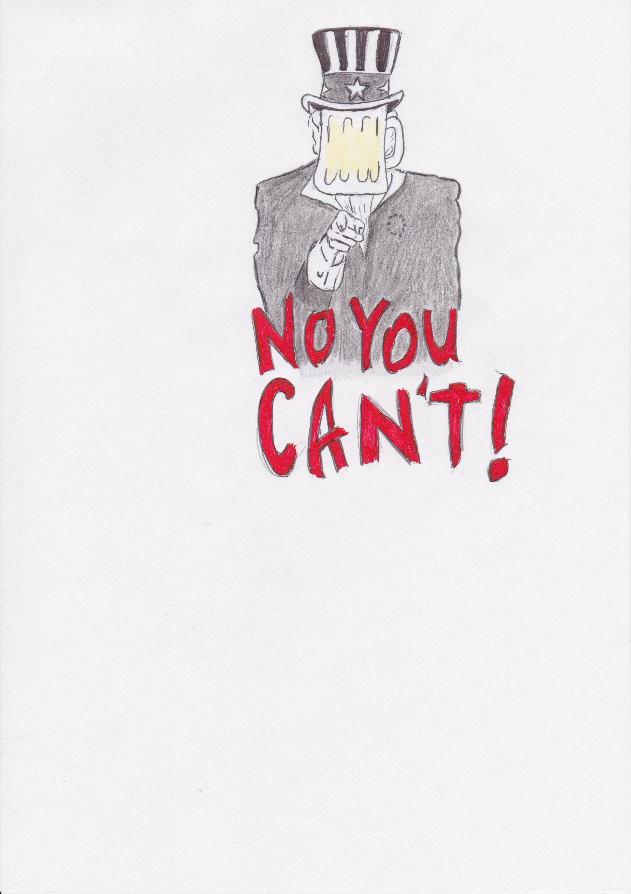

Faux.
L'alcoolisme est une problématique qui s'installe insidieusement. C'est un cercle vicieux qui comprend différentes spirales agissant tant au niveau biologique, social, affectif, cognitif que narcissique. En savoir plus
L'alcool est très présent dans notre société et est très médiatisé. De ce fait, de nombreuses croyances courent à son sujet. Nous vous proposons de remettre celles-ci en questions et de tester vos connaissances.
Une bonne réponse s'affichera en vert, une mauvaise réponse s'affichera en rouge.
C'est la volonté qui permet de s'en sortir: "Quand on veut on peut".
Faux.
L'alcoolisme est une problématique qui s'installe insidieusement. C'est un cercle vicieux qui comprend différentes spirales agissant tant au niveau biologique, social, affectif, cognitif que narcissique. En savoir plus
Une fois que mon partenaire arrêtera de boire, tout rentrera dans l'ordre.
Faux.
Tout d'abord, l'abstinence modifie l'équilibre de vie. Pour le partenaire, c'est aussi une transformation. Il faut réadapter la vie quotidienne autour de ça. Ensuite, l'abstinence est difficile car l'alcool fait partie des rituels sociaux. Ne pas boire éveille des questions et on est constamment face à la tentation. La personne a alors deux solutions: éviter les fêtes et autres rassemblements sociaux, ce qui induit un risque d'isolement ou continuer à aller aux fêtes en luttant pour ne pas "craquer" et en acceptant le regard inquisiteur de ceux qui se demandent pourquoi on ne boit pas. L'astinence est donc loin d'être une solution miracle, acquise pour toujours et le support social est très important pour tenir bon.
Le problème commence quand on boit seul chez soi.
Faux.
On distingue dépendance "au boire" et dépendance à l'éthanol. Les personnes dépendantes à l'éthanol sont plutôt celles qui aiment boire un verre dans leur fauteuil pour se relaxer après une grosse journée de travail. Les personnes dépendantes "au boire" sont celles qui consomment de manière régulière pour obtenir les effets désinhibant de l'alcool. Ce sont typiquement les adolescents ou jeunes adultes qui boivent chaque fois qu'ils sortent. En réalité, cette consommation est plus à risque car la prise d'alcool est liée à son rôle social. En l'absence d'alcool, la personne ne sait plus s'amuser en groupe. Par contre, la personne qui boit seule peut choisir de prendre une tasse de thé ou de faire autre chose de relaxant si elle se dit que ce n'est pas une bonne idée de boire trop souvent. Conclusion: La prise d'alcool régulière en soirée induit un risque d'alcoolisme réel.
L'alcoolisme touche plus d'hommes que de femmes.
Vrai.
La prévalence est de 12% chez les hommes pour 5% chez les femmes.
En revanche, il est important de savoir que les femmes, à cause de leur morphologie (elles pèsent moins lourd et sont constituées de plus de graisse) sont plus vulnérables que les hommes aux conséquences de la consommation d’alcool sur la santé (comme des problèmes au foie).
L’alcool rend agressif.
Partiellement vrai.
L’alcool est un facteur désinhibiteur, cela signifie qu’il favorise l’impulsivité. Cette impulsivité peut encourager le recours à la violence dans certains conflits conjugaux.
De plus, en cas d’alcoolisme chronique, certaines fonctions intellectuelles sont dégradées, et des troubles du caractère peuvent apparaître, induisant parfois de la jalousie, voire une certaine paranoïa. L'alcool n'engendre pas la violence mais, en cas de conflit, il augmente les tendances agressives.
Les femmes et les hommes consomment de l’alcool pour les mêmes raisons.
Faux.
Selon les études menées sur les adolescents, les hommes boivent afin d’être reconnus comme membres d’un groupe de pairs, ou parce que l’alcool les aide à relever des défis donnant accès au “statut d’homme”. Les femmes, quand à elles, boivent quand elles se sentent tristes, abandonnées, parce qu’elles pensent que l’alcool va les aider à mieux faire face à leurs problèmes, ou en pensant que ça va les aider dans leurs relations.
On est alcoolique lorsqu’on dépasse la consommation d’un certain nombre de verres d’alcool par jour.
Faux.
L’alcoolisme n’est pas défini par le nombre de verres que l’on consomme par jour, et ce n’est pas parce que la personne boit plus de trois verres par jour qu’elle est considérée comme alcoolique. Il est en revanche bien établi qu’au plus on boit quotidiennement, au plus le risque de développer un syndrome alcoolique augmente.
Il faut savoir que le diagnostic de l’alcoolisme se centre sur les conséquences que la consommation entraîne dans la vie quotidienne et sur les difficultés à stopper ou à restreindre sa consommation. Notez également qu'on différencie "dépendance psychique" et "dépendance physique". En savoir plus
Les risques de développer une dépendance à l’alcool sont liés à l’âge auquel on a commencé à consommer.
Vrai.
Plus on commence à boire jeune, plus il y a de risques de développer une dépendance. Ceci peut s'expliquer par le fait que le cerveau n’a pas fini sa croissance durant l’enfance et l’adolescence. Il est donc plus vulnérable aux modifications induites par l’alcool, et celles-ci perdureront plus longtemps dans un cerveau jeune. En savoir plus
Un ancien alcoolique ne pourra plus jamais boire sans risquer de retomber dans la dépendance.
Vrai
Bien que les personnes recherchant un traitement à leur dépendance aient parfois du mal à l’accepter, même la consommation du plus petit verre d’alcool après la convalescence risque de les faire retomber dans la maladie. Ceci est lié aux modifications neurologiques que la consommation chronique d’alcool a entraînées. Notons que cette tendance est encore plus puissante en cas de dépendance physique. En savoir plus
Boire un verre d’alcool par jour est bon pour la santé.
Partiellement vrai
Les études montrent qu’une faible consommation d’alcool quotidienne est associée à une réduction des risques de maladie cardiovasculaire. Mais cela ne signifie toutefois pas que quelqu’un qui n’a pas l’habitude de consommer de l’alcool doive commencer à en boire chaque jour pour être en meilleure santé ! Le message à retenir est plutôt que si vous buvez, faites-le avec modération.
En outre, la fondation contre le cancer souligne les risques cancérigènes d'une consommation régulière d'alcool ainsi que son apport calorique lié à des problèmes d'obésité.